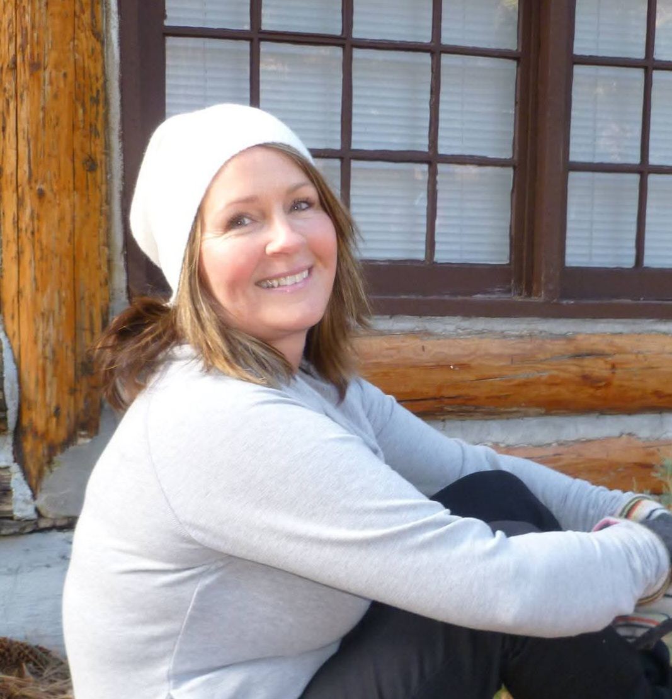

About me

With a Bachelor of Social Work and years of life and professional experience supporting others, I offer compassionate, practical guidance for people seeking greater clarity, balance, connection, and direction in their lives.
My approach is warm, honest, and conversational. I listen closely, ask thoughtful questions, and reflect back what I'm hearing. I'm not here to tell you what to do or hand you a list of answers — instead, I provide a sounding board, a space where you can explore what you're thinking and feeling without judgment or pressure.
I believe people often know more about what they need than they realize. Sometimes it's in talking things through that something suddenly clicks — you recognize a pattern, see a situation differently, or discover an answer that was there all along. My role is to help create the space for those moments of clarity and support you as you decide what feels right for your life.
Whether you're navigating a relationship, family dynamics, a major transition, personal growth, or simply trying to figure out what comes next, my goal is to help you leave feeling clearer, more grounded, and more confident in your own direction. All sessions are remote, held over video, and last a full hour, giving us time for a meaningful conversation without feeling rushed.